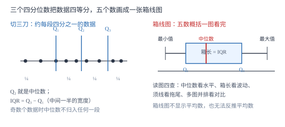

四分位数与箱线图
中位数把数据切成两半，下四分位数和上四分位数再把两半各切一刀——三个数把数据等分成四段，配上最大值最小值，五个数画成一个「箱子」，一组数据的分布一眼看穿。
| 所属主题 | 统计 |
|---|---|
| 所属模块 | 统计与概率 |
| 课标学段 | 第四学段（7~9 年级） |
| 前置知识 | 数据的集中趋势（平均数·中位数·众数） |
| 核心素养 | 数据观念几何直观 |
教材定位
人民教育出版社《人教版（2024版）义务教育教科书·数学》
八年级下册第24章 数据的分析24.3 数据的四分位数
对应八下 24.3 数据的四分位数，是 2024 版教材新增的节（旧版没有）。内容含四分位数的求法与箱线图的读法；异常值的 1.5× 四分位距判别法在教材以拓展形式出现，本篇也按拓展处理。
说明
中位数只切一刀，把数据分成两半；四分位数切三刀：把一组数据从小到大排列，位于第 1/4 与第 3/4 位置的数分别是下四分位数 Q_1 与上四分位数 Q_3，中位数本身就是第二个四分位数 Q_2。三个切分点把数据分成四段，每段大约含四分之一的数据。初中求 Q_1、Q_3 用中位分段法：先求中位数把数据分成前后两段（奇数个数据时，中位数不归入任何一段），Q_1 是前段的中位数，Q_3 是后段的中位数。
四分位距 IQR=Q_3-Q_1，是箱子里那段的长度：中间约一半数据散落在宽度为 IQR 的区间里。IQR 越小，中间一半的数据越集中。它与极差（最大值减最小值）的分工：极差看全长、受极端值摆布，IQR 只看中间一半、对极端值免疫。
箱线图用五个数概括一组数据：最小值、Q_1、中位数、Q_3、最大值，称为五数概括。画法：在数轴上，一个矩形箱子左边界在 Q_1、右边界在 Q_3，箱内一条线标中位数，箱外两条须线分别伸到最小值与最大值。几组数据并排画箱线图，谁的水平高（看中位数）、谁更稳定（看箱长）、谁有长尾（看须线长短），一眼比出。
使用场景
成绩分析是四分位数最日常的战场：老师说「你的成绩超过了全班的下四分位数」意思是你甩开了后四分之一；两次考试成绩的箱线图并排一摆，中位数看整体、箱长看波动，比只报平均数诚实得多。
质检与时效管理用 IQR 监控稳定性：两家快递都说「平均三天到」，箱线图一画，箱短的那家才是真稳定；极端值（某天爆仓拖了十天）不会骗过中位数与四分位数。
注意点
求 Q_1、Q_3 之前必须先排序，且四段是「大约」各占四分之一——不是恰好等分，个别数据重叠在切分点上很正常。
奇数个数据求分段中位数时，中位数本身不归入任何一段：9 个数据，中位数是第 5 个，前段是第 1 至 4 个、后段是第 6 至 9 个，各 4 个；把中位数算进某一段是高频错误。
箱线图不显示平均数，也不能从箱线图反推平均数；箱长（IQR）也不是极差。三个概念——极差、IQR、方差——各量各的：极差看两端，IQR 看中间一半，方差看每一个数对平均的偏离。
证明

图 1：三个四分位数把数据四等分；箱线图把 Q1、中位数、Q3 装进箱子，两条须线伸到最值——五个数讲完一整组数据
证明
结论 1中位数不够用，才需要四分位数：中位数知道数据的「正中间」，不知道中间那段有多宽。
两组数据 A：50,52,54,56,58；B：50,50,54,58,58。两组中位数同为 54、平均数同为 54，但 A 每个数都挤在 54 附近，B 两头拉开。只报告中位数，两组的差别完全丢失；用中位分段法算 Q_1、Q_3：A 的前段 50,52 中位数 51，后段 56,58 中位数 57，IQR=6；B 的 Q_1=50、Q_3=58，IQR=8。中间一半数据的散布差别被 IQR 捕捉到了。切三刀比切一刀多看见两件事：数据的松紧与偏斜。
关键一步依据是四分位数额外携带「散布」信息；中位数只携带「位置」信息。
结论 2中位分段法求出的 Q_1、Q_3 确实把数据大约四等分。
以 8 个数据 62,68,75,78,82,85,90,96 验证：中位数 =78+82/2=80，前段 62,68,75,78 中位数 Q_1=68+75/2=71.5，后段 82,85,90,96 中位数 Q_3=85+90/2=87.5。数一下四段的个数：[62,71.5) 含 2 个，[71.5,80) 含 2 个，[80,87.5) 含 2 个，[87.5,96] 含 2 个——恰好 2:2:2:2 四等分 ✓。偶数个数据时这个分法是精确四等分；奇数个时中位数独占一格，其余数据仍约四等分。
关键一步依据是中位数的位置性质；分段后逐段计数即可检验。
结论 3箱线图五数概括能同时呈现水平、波动与偏斜，是信息密度最高的统计图之一。
五个数各自回答一个问题：最小值与最大值回答「全长多少」（极差 = 两者之差）；Q_1 与 Q_3 回答「中间一半挤在多窄的区间」（IQR）；中位数回答「一半数据在哪个数以下」。三者合起来还能看出偏斜：若中位数离 Q_1 近、离 Q_3 远（箱子右边长），说明后半段数据拉得更开，分布右偏。一张图五个数，把平均数、方差都无法直接展示的「分布形状」画了出来。
关键一步依据是五数各自携带位置、散布、全长三类信息；图形化后直接可读。
动手实验
记录全组同学昨天做数学作业用的分钟数（至少 12 人），从小到大排序，按中位分段法算出 Q_1、中位数、Q_3 和 IQR，在数轴上画一张箱线图。然后回答三个问题：你自己的用时落在箱内、箱左须还是箱右须？中位数离 Q_1 近还是离 Q_3 近（说明全班用时偏快还是偏慢）？如果有人只写了 10 分钟，他在什么位置？亲手切三刀，比背三遍定义都清楚。
解题思路
求四分位数固定流程：①从小到大排序（不排错序，后面全错）；②求中位数 Q_2；③奇数个数据时中位数独放一边，前后段各取「剩下的数」；④分别求前段、后段的中位数，得 Q_1、Q_3；⑤\ IQR=Q_3-Q_1。每一步写出来，不心算。
比较两组数据的稳定性，优先级是：先比中位数看水平（水平差太多，稳定性没有意义），水平相当再比 IQR 或箱长——箱短者稳。只报平均数不比波动，是统计里最常见的「半句话结论」。
读箱线图按四查：一查中位数（水平），二查箱长（中间一半的波动），三查须线长短（两端拖没拖尾），四查多图对比（中位数高低、箱子重叠多少）。
按场景的例题
例 1（场景：数据调查） 八名学生成绩
八名学生的数学成绩（分）从小到大为：62,68,75,78,82,85,90,96。求这组数据的下四分位数、中位数、上四分位数和四分位距，并解释 Q_3=87.5 的含义。
解：中位数 Q_2=78+82/2=80。前段 62,68,75,78：Q_1=68+75/2=71.5。后段 82,85,90,96：Q_3=85+90/2=87.5。IQR=87.5-71.5=16。验算四段个数：2:2:2:2 四等分 ✓。Q_3=87.5 的含义：成绩在 87.5 分以上的学生约占四分之一，即有 2 人（90 和 96）进入了最高的四分之一梯队。
答：Q_1=71.5，Q_2=80，Q_3=87.5，IQR=16；87.5 分是最高四分之一档的门槛。
例 2（场景：销售与利润） 两家门店月销对比
甲、乙两家门店近几个月的月销售额（万元）的五数概括如下——甲：最小 12，Q_1=15，中位数 18，Q_3=22，最大 25；乙：最小 10，Q_1=14，中位数 21，Q_3=23，最大 28。①哪家门店的整体水平更高？②哪家更稳定？③分别求两家的四分位距。
解：①比中位数：乙的中位数 21 高于甲的 18，乙的整体水平更高。②看中间一半的波动：甲的 IQR=22-15=7，乙的 IQR=23-14=9；甲的箱子更短，中间一半月份的销售额波动更小，甲更稳定。③如上：IQR_甲=7，IQR_乙=9。综合结论：乙「冲得高」但起伏大，甲「稳得住」但天花板低；要冲业绩看乙，要控风险学甲。验算：极差甲 =25-12=13、乙 =28-10=18，与 IQR 的结论方向一致 ✓。
答：①乙（中位数 21>18）；②甲（IQR 为 7，小于乙的 9）；③IQR_甲=7，IQR_乙=9。
例 3（场景：生活优化） 两家快递时效
甲、乙两家快递各取 9 天的送达天数（天）：甲为 25,28,30,31,33,35,36,40,42；乙为 28,29,31,32,33,34,36,37,38。①求甲的四分位数；②比较两家的时效水平与稳定性。
解：①甲共 9 个数，中位数是第 5 个：Q_2=33；中位数不归段，前段 25,28,30,31 得 Q_1=28+30/2=29，后段 35,36,40,42 得 Q_3=36+40/2=38；IQR=9。②乙：中位数 Q_2=33（第 5 个），前段 28,29,31,32 得 Q_1=29+31/2=30，后段 34,36,37,38 得 Q_3=36+37/2=36.5，IQR=6.5。两家中位数都是 33 天，时效水平相当；乙的 IQR=6.5<9，中间一半的送货天数更集中，乙更稳定。验算乙的四段个数：2:2:2:2 略去中位数后仍均匀分布 ✓。
答：①甲：Q_1=29，Q_2=33，Q_3=38，IQR=9；②水平相当（中位数同为 33 天），乙更稳定（IQR=6.5<9）。
常用推论
极差、四分位距、方差三兄弟分工：极差 = 最大 - 最小（看两端，一票否决式敏感），IQR=Q_3-Q_1（看中间一半，对两端免疫），方差看每个数据对平均数的偏离（全量，计算量大）。三把尺子量同一段数据，回答的分别是「总长」「中间一半的宽度」「平均晃动幅度」。
（拓展）判别异常值的常用规则：小于 Q_1-1.5× IQR 或大于 Q_3+1.5× IQR 的数据视为离群点，画箱线图时改用单独的点标出，须线只伸到最近的一个非离群值。
五数概括对任何分布都适用，不要求对称、不依赖平均数——这正是它比「平均数 ± 标准差」更通用的地方：平均数会被极端值拖走，中位数与四分位数不会。
易错点
错求 9 个数据的 Q_1 时，把中位数也算进前半段，取前 5 个数的中位数。
为什么错中位数是三刀切分的切分点本身，不属于任何一段；算进去会把四段的比例搅乱。
正确奇数个数据时中位数独放一边：前段取第 1 至 4 个、后段取第 6 至 9 个，各求中位数。
错把 IQR 当成极差，说「四分位距就是最大值减最小值」。
为什么错那是极差的定义；四分位距是 Q_3-Q_1，只覆盖中间约一半的数据。
正确IQR=Q_3-Q_1；极差 = 最大值 - 最小值，两者一般不相等。
错没有排序就直接数第几个数，或从乱序数据里挑数求四分位数。
为什么错四分位数的一切前提是「从小到大排列」；乱序下「第 1/4 位置」根本无从谈起。
正确先排序，再找中位数，再分段求 Q_1、Q_3。
直观理解
把全班同学按身高从矮到高站成一排，中位数站在正中央；再在左半队、右半队各找一个「半个队的正中央」，加上两头——五个人站定的位置，就把整个队伍的疏密看清楚了：五人挨得近说明队伍紧凑，中间三人站得开说明大家高矮参差。箱线图就是把这五个人画成「箱子加两条须」，一眼看完一支队伍。